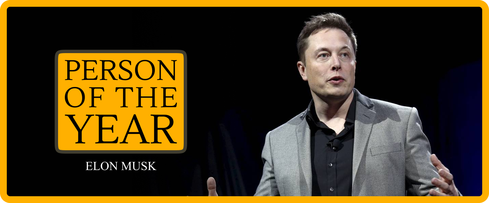
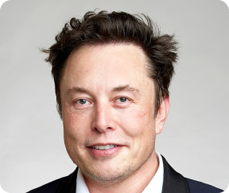
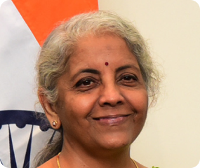
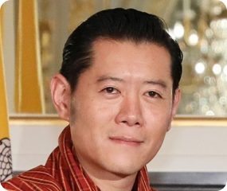
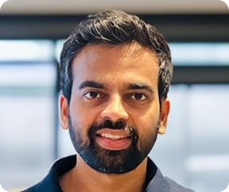

Chosen by the Web3 community. Announced at India Blockchain Tour.

"In 2024, no one person had a bigger influence on where crypto moved, what it talked about, and who paid attention to it."
— Octaloop EditorialEvery year at the final city of India Blockchain Tour, we turn the question over to the community: who did the most for Web3 this year? Not the most popular. Not the most online. The most consequential — the individual whose actions, decisions, or presence shaped the trajectory of the ecosystem in ways that will be felt long after the year ends.
2024 was a year of enormous stakes. Bitcoin hit new all-time highs. Spot ETFs arrived. A US election turned crypto into a mainstream political issue for the first time. And through all of it, one figure remained impossible to ignore — not because he tried to be, but because his words, his platform, and his reach had a gravitational effect on the entire space.
Elon Musk did not build a blockchain in 2024. He did something harder: he kept crypto in the room. When you own the platform where the global crypto conversation happens, when your tweets move markets, when the meme coin you back rallies thousands of percent — you are part of the story whether you want to be or not. In 2024, he was very much part of the story.
The Octaloop Person of the Year in Web3 is not an editorial award given behind closed doors. It is a community mandate — earned through the votes of thousands of people who live and breathe this industry every day.
Our team curates a shortlist of individuals who shaped Web3 in a meaningful way that year — across policy, technology, markets, and culture. Nominees span the globe but are judged on their impact on the broader ecosystem.
At the final city of India Blockchain Tour — our flagship multi-city Web3 event series — the entire audience votes live. These are founders, investors, traders, developers, and builders. Their voice is the verdict.
The results are tallied on stage and the winner is announced to the room — no editors, no panels, no politics. The community decides. We just ask the question.
Eleven names. One year. Each of these individuals left a mark on Web3 in 2024 that the community recognised, debated, and voted on.

Owned the platform where crypto lives, backed Dogecoin relentlessly, and moved markets with words alone — an inescapable force in the 2024 crypto narrative.

Held India's crypto policy steady through global turbulence — maintaining the 30% tax regime while the FIU registration framework reshaped how exchanges operate in India.
Resigned as Binance CEO, pled guilty, and began serving his sentence — ending a chapter in crypto's history and beginning a new one about accountability at scale.
Made crypto central to his 2024 campaign — the first major presidential candidate to accept crypto donations and openly court the industry's vote.

Bhutan's sovereign Bitcoin mining programme went public — revealing a small Himalayan kingdom quietly accumulating Bitcoin at a national level for years.
Kept buying Bitcoin through every market condition, turning MicroStrategy into a corporate Bitcoin treasury that institutional investors couldn't ignore.
Continued El Salvador's Bitcoin experiment into its third year — proving that a national Bitcoin Law could survive political pressure, IMF scrutiny, and market cycles.
The industry's most consequential adversary — whose aggressive enforcement posture defined how crypto companies structured, defended, and ultimately fought back against regulation.

Faced one of India's largest exchange hacks head-on — navigating the $230M incident with transparency in a market where trust is everything.
Led Polygon's transition from MATIC to POL — a significant technical and brand evolution that positioned the network for its next phase of growth.
Continued publishing, thinking, and building in public — keeping Ethereum's intellectual roadmap visible even as the network's L2 ecosystem grew beyond any single person's view.
Octaloop Web3 Person of the Year · 2024
The argument against Elon Musk as Person of the Year is easy to make. He didn't build a protocol. He didn't write a whitepaper. He isn't building the infrastructure of the decentralised future. But that argument misses the point of this award — and misses what 2024 actually was.
2024 was a year where the crypto story escaped the crypto bubble. It landed on the front page of every newspaper, in every election conversation, and in the portfolios of people who a year ago had never heard of a spot ETF. For that to happen, the story needed a gravitational centre — a name that non-crypto people recognised and a platform that reached beyond the choir.
Elon Musk was that centre. X became the de facto home of crypto discourse. His mentions of Dogecoin sent it surging. His implicit support of the pro-crypto political movement in America helped make crypto policy a 2024 election issue. And his acquisition of Twitter — now X — kept the industry's most important conversations on a platform he controlled and shaped.
The IBT community didn't vote for Musk because they agreed with everything he did. They voted for him because in 2024, if you wanted to understand where crypto was going, you had to understand where Elon Musk was pointing. That's what consequential looks like.